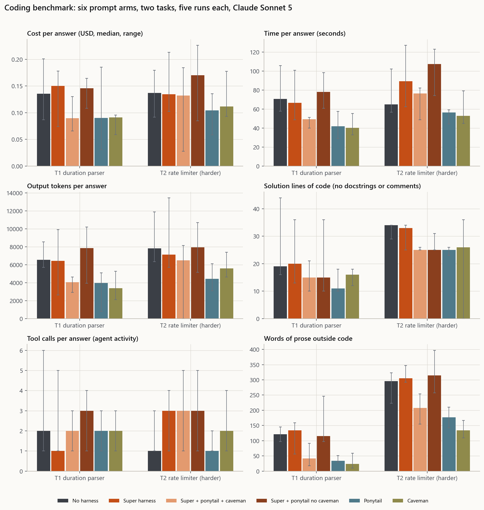
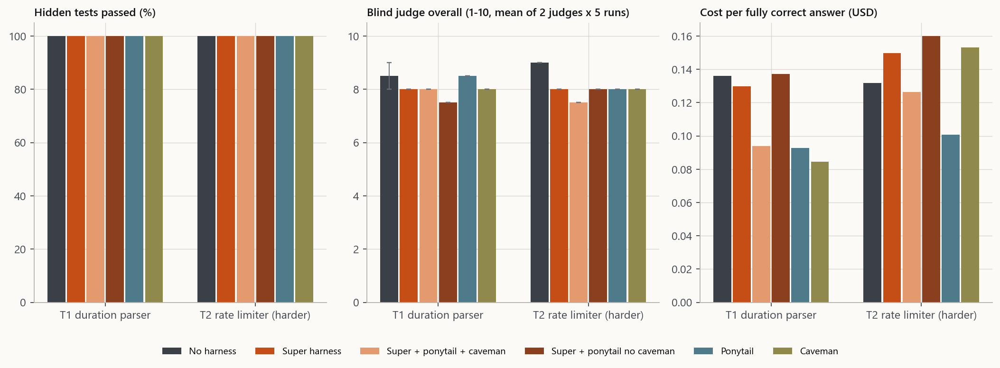
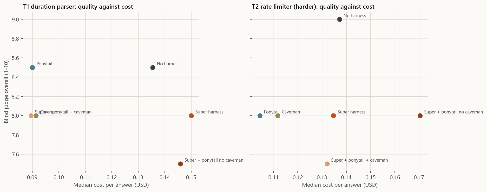
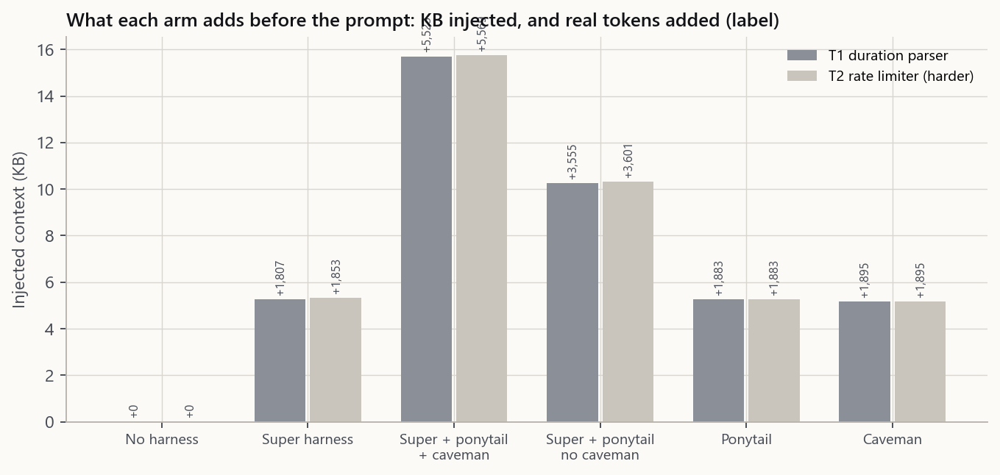
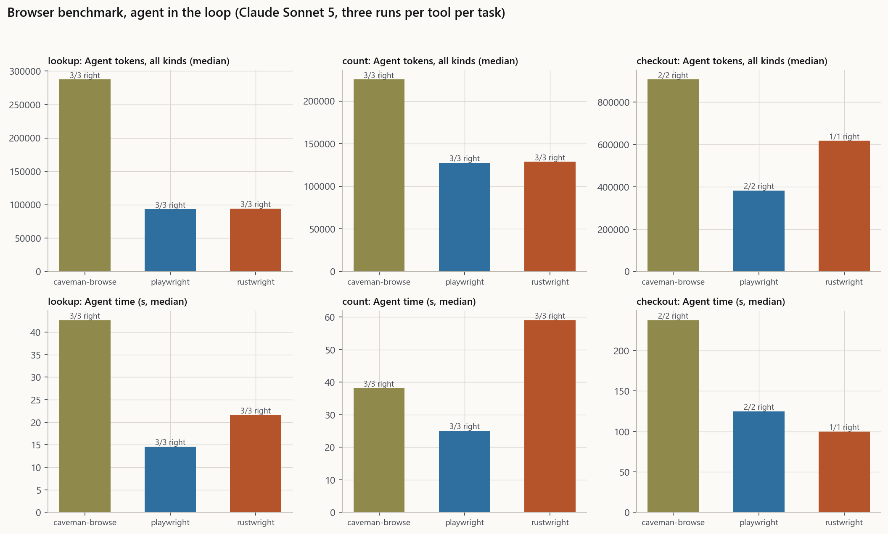
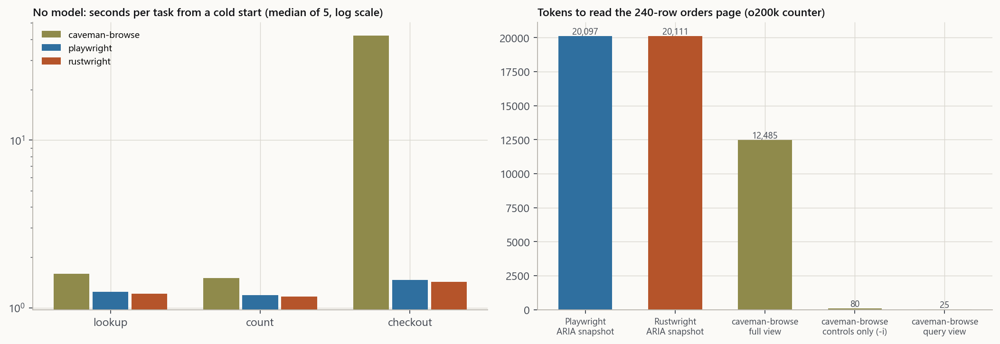
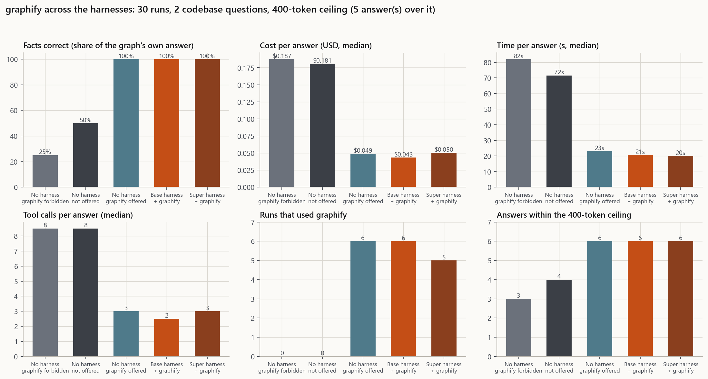

Six ways of asking, two coding tasks, five runs each, then three browser tools on the same three tasks, then graphify across the harnesses under a token ceiling. Everything here was run against real models and real tools on one machine, and every number comes from a transcript or a results file.
The short version
The harness does not make the model more correct on these tasks. All six prompt arms passed 100% of the hidden tests on both coding tasks, and the plain no-harness arm scored highest with the blind judges on the harder one. What the arms change is cost, length and shape.
The compression skills pay for themselves; the chain alone does not. Ponytail cut cost 33.5% on T1 and 23.9% on T2, caveman 32.6% and 18.6%, and the two on top of the super harness 33.9% and 3.7%. The super harness by itself cost 10.7% more on T1 and 1.8% less on T2.
Removing caveman from a pair that had it made everything worse. Super plus ponytail without caveman was the most expensive arm measured (+24.2% against no harness on T2), the wordiest (315 prose words), and produced 49 em dashes across ten answers, which its own rule 3 forbids.
graphify changes the answer on questions a graph answers. Naming the three architectural hubs: 0% and 33% correct without it, 100% with it, at a seventh of the cost and a sixth of the time. On a question one grep answers, every arm scored 100%: the gain is specific, not general.
The token ceiling is advisory unless it runs through the proxy. At 600 tokens, 5 of 16 answers stayed inside it. Rewriting rule 15 to state a word budget made answers shorter and more accurate but did not change compliance.
Rustwright is the fastest engine and by far the lightest; caveman-browse reads a page for fewer tokens but acts slowly. Checkout took 1.43s on Rustwright, 1.46s on Playwright and 42.1s on caveman-browse, whose client-line actions each wait to settle.
What was asked, and where each part is answered
A live test of the super harness against no harness, with the prompts and a graph: Part A.
Super with ponytail and caveman against super with ponytail but no caveman, and ponytail against caveman: Part A.
caveman-browse against Playwright against a Rust Playwright: Part B. The Rust one is Rustwright, from Skyvern, which is Playwright's API on a Rust engine.
The prompts, including a slightly harder one to run yourself: Part C.
Does the super harness work, is it automatic, and does /token limit make the model stop: Part D.
The + on client surfaces, and skills as deep as their originals, updated when upstream moves: Part D.
Moving skills, tools, plugins and MCP into MongoDB or PostgreSQL: whether it is possible, whether it works, the flaws, a plan and an architecture diagram: Part E.
Part A
Super harness against no harness, and the skill combinations
How it was run
Every arm ran in the same scaffold: Claude Sonnet 5 in an agent profile that does not load CLAUDE.md, so the no-harness arm really has no harness. A probe confirmed it: asked whether it could see the phrases "Standing pipeline" or "THREE LAYERS", it answered no to both.
The harness arms' context is not written by hand. It is produced by this repository's own hook, in the mode that arm names, for that exact prompt, so what the model receives is what a real session receives. Every run's first message was checked against the sha256 of its committed prompt file; 60 of 60 matched.
Scoring is objective first: a hidden test suite the model never saw, plus the answer's own tests re-run against its own code. Two blind judges, one Opus 5 and one Sonnet 5, then scored five dimensions without being told which arm produced the answer.

Six arms, two tasks, five runs each. Bars are medians; whiskers are the range across the five runs.
T1, the standard prompt: duration parser
Arm
Injected KB
Real tokens added
Cost
Cost vs none
Seconds
Output tokens
Solution LOC
Test LOC
Tool calls
Prose words
Hidden tests
Own tests green
Judge /10
Cost per correct
No harness
0.0
0
$0.1355
+0%
70.8
6,534
19
61
2
121
100%
5/5
8.50
$0.1361
Super harness
5.3
1,807
$0.1500
+11%
66.7
6,418
20
65
1
134
100%
5/5
8.00
$0.1297
Super + ponytail + caveman
15.7
5,523
$0.0895
-34%
49.4
4,065
15
51
2
42
100%
5/5
8.00
$0.0940
Super + ponytail, no caveman
10.3
3,555
$0.1459
+8%
78.1
7,840
15
56
3
115
100%
5/5
7.50
$0.1371
Ponytail only
5.3
1,883
$0.0900
-34%
42.0
3,961
11
40
2
34
100%
5/5
8.50
$0.0928
Caveman only
5.2
1,895
$0.0913
-33%
40.2
3,398
16
51
2
24
100%
5/5
8.00
$0.0845
T2, the slightly harder prompt: sliding-window rate limiter
Arm
Injected KB
Real tokens added
Cost
Cost vs none
Seconds
Output tokens
Solution LOC
Test LOC
Tool calls
Prose words
Hidden tests
Own tests green
Judge /10
Cost per correct
No harness
0.0
0
$0.1372
+0%
65.1
7,828
34
79
1
296
100%
5/5
9.00
$0.1317
Super harness
5.3
1,853
$0.1347
-2%
89.4
7,115
33
75
3
305
100%
5/5
8.00
$0.1496
Super + ponytail + caveman
15.8
5,569
$0.1321
-4%
76.5
6,477
25
59
3
208
100%
5/5
7.50
$0.1263
Super + ponytail, no caveman
10.3
3,601
$0.1704
+24%
107.5
7,929
25
56
3
315
100%
5/5
8.00
$0.1600
Ponytail only
5.3
1,883
$0.1044
-24%
56.5
4,415
25
48
1
177
100%
5/5
8.00
$0.1006
Caveman only
5.2
1,895
$0.1117
-19%
52.8
5,575
26
64
2
134
100%
4/5
8.00
$0.1532
Real tokens added is the first API call's full context for that arm minus the no-harness arm's, as Claude's own
tokenizer counted it. Hidden tests are the checks in hidden/, which no model saw. Own tests green counts runs whose own tests passed
when run against their own code. Judge is the mean of two blind Opus 5 judges per answer. Cost per correct is total cost divided by
answers that passed every hidden test.

Quality: hidden tests passed, blind judge score, and cost per fully correct answer.

Quality against cost, per arm and task. Up and to the left is better.
Blind judge scores by dimension (mean of both tasks)
Arm
Correctness
Code quality
Test quality
Instructions followed
Communication
T2 three-sentence note
T2 lists unhandled cases
No harness
8.88
8.75
8.50
9.75
8.12
100%
100%
Super harness
8.50
8.75
8.25
9.25
6.75
100%
100%
Super + ponytail + caveman
8.75
8.25
7.62
9.00
5.75
100%
100%
Super + ponytail, no caveman
8.75
8.00
8.25
8.50
6.00
100%
100%
Ponytail only
8.75
8.25
7.75
9.00
7.25
100%
100%
Caveman only
8.25
8.50
8.00
9.25
5.75
100%
100%

What each arm puts in front of the prompt: kilobytes injected, labelled with the real tokens added.
What the numbers say
Correctness saturated. Every arm passed every hidden test on both tasks, 100% across 60 runs. These two tasks do not separate the arms on correctness, and no claim that a harness makes a model more correct can rest on them.
Cost separates them cleanly. On T1: ponytail $0.0900, caveman $0.0913, super plus ponytail plus caveman $0.0895, against $0.1355 with no harness and $0.1500 for the super harness alone. The compression skills are what move the number.
Prose is where the tokens went. Words outside code, T1: caveman 24, ponytail 34, super plus both 42, no harness 121, super alone 134. On T2: caveman 134, ponytail 177, super plus both 208, no harness 296, super alone 305.
Code got shorter too. The solution for T1 was 11 lines under ponytail and 19 with no harness; for T2, 25 lines against 34.
The anti-slop rule is not self-enforcing. Rule 3 says no em dashes. Across ten answers per arm: caveman 5, super plus both 12, no harness 17, ponytail 22, super alone 29, and super plus ponytail without caveman 49. The arm carrying the rule most prominently produced more of them than the arm carrying no rule at all.
The judges did not reward the harness. Means across both tasks put no harness at 8.5 and 9.0, ponytail 8.5 and 8.0, super 8.0 and 8.0, and super plus ponytail without caveman lowest at 7.5. Two judges, three runs per cell, so treat this as a direction rather than a ranking.
Super + ponytail + caveman against super + ponytail without caveman, and ponytail against caveman
Super plus ponytail plus caveman against super plus ponytail with caveman removed. Removing caveman cost 31% more on T2 ($0.1704 against $0.1321), produced 51% more prose (315 words against 208), and produced four times the em dashes (49 against 12). On this evidence caveman is doing the compression work in that pair, and ponytail alone does not replace it.
Ponytail against caveman. They cut cost by about the same amount on T1 (33.5% and 32.6%) and differ in what they cut. Ponytail shortens the code: 11 lines against caveman's 16 on T1. Caveman shortens the talking: 24 words of prose against ponytail's 34 on T1, and 134 against 177 on T2. They are complementary, which is what ponytail's own documentation says: it governs what you build, not how you talk.
The super harness alone is the weakest buy here. It cost more than no harness on T1, produced the most prose of any arm on both tasks, and did not score better with the judges. Its value has to come from the passes that do not show up in a two-task benchmark, such as the review and verify passes on longer work, and this benchmark does not measure that.
Part B
caveman-browse against Playwright against Rustwright
Three tools on the same three tasks over two local pages: find one order's total in a 240-row table, count the rows matching two conditions, and complete a checkout form and read back the confirmation code. Each tool drove the same installed Microsoft Edge, so the browser is held constant and the engine is what varies.
Twice over: once with an agent in the loop (Sonnet 5, three runs per tool per task) and once as fixed scripts with no model at all (five cold rounds per tool per task). The scripts for Playwright and Rustwright are literally the same functions; only the import changes.

An agent does each task with each tool: tokens and time, with how many of three runs got the right answer.

Without a model: seconds per task from a cold start, and the tokens each tool needs to show the orders page.
Agent in the loop
Task
Tool
Correct
Cost
Tokens, all kinds
Output tokens
Seconds
Tool calls
Code lines written
lookup
caveman-browse
3/3
$0.1306
287,444
2,104
42.6
5
5
lookup
playwright
3/3
$0.0572
93,327
671
14.6
1
13
lookup
rustwright
3/3
$0.0596
94,410
1,142
21.6
1
15
count
caveman-browse
3/3
$0.1119
225,155
2,391
38.2
3
3
count
playwright
3/3
$0.0664
127,450
1,012
25.1
2
34
count
rustwright
3/3
$0.0780
128,697
1,849
59.0
2
44
checkout
caveman-browse
2/2
$0.3149
907,142
7,488
237.3
18
16
checkout
playwright
2/2
$0.1687
382,500
4,201
124.9
7
31
checkout
rustwright
1/1
$0.2387
617,578
4,896
100.0
11
26
Code lines written: lines of Python the agent ran for Playwright and Rustwright; for caveman-browse,
the number of CLI commands it ran, since its interface is commands rather than a script.
No model: the same tasks as fixed scripts, cold start each time
Task
Tool
Correct
Median s
Range s
Client memory MiB
lookup
caveman-browse
5/5
1.59
1.43 to 2.19
n/a
lookup
playwright
5/5
1.24
1.15 to 3.39
174.5
lookup
rustwright
5/5
1.21
1.16 to 1.40
51.7
count
caveman-browse
5/5
1.50
1.46 to 1.70
n/a
count
playwright
5/5
1.19
1.16 to 4.83
163.9
count
rustwright
5/5
1.17
1.09 to 1.29
50.8
checkout
caveman-browse
5/5
42.13
42.06 to 42.24
n/a
checkout
playwright
5/5
1.46
1.44 to 1.63
196.6
checkout
rustwright
5/5
1.43
1.34 to 1.49
52.0
Page view
Bytes
Tokens (o200k)
caveman-browse:checkout:full
2,168
652
caveman-browse:checkout:interactive
296
80
caveman-browse:orders:full
43,264
12,485
caveman-browse:orders:interactive
292
80
caveman-browse:orders:query
84
25
playwright:checkout:full
2,505
740
playwright:orders:full
63,820
20,097
rustwright:checkout:full
2,532
743
rustwright:orders:full
63,872
20,111
Tool
Script LOC for the three tasks
caveman-browse
38
playwright
22
rustwright
22
What the numbers say
Rustwright is a drop-in and it is faster. The same task functions ran unchanged on both engines. Cold-start medians: 1.21s, 1.17s and 1.43s for lookup, count and checkout, against Playwright's 1.24s, 1.19s and 1.46s. The gap is small on warm local pages and larger at launch.
Rustwright's memory claim holds. Client-side memory, excluding the browser itself: about 51 MiB against Playwright's 164 to 197 MiB, because there is no Node driver process.
caveman-browse reads a page for fewer tokens. The full orders page costs 12,485 tokens as its compressed view against 20,097 for Playwright's ARIA snapshot, 38% less. Its query view of the same page is 25 tokens, and its controls-only view 80.
But acting through it is slow. Checkout took 42.1s against 1.4s, because each command-line action waits for the page to settle and each call reconnects. The read tasks are competitive at 1.5s.
Two limits of its command line, both measured. A snapshot with no url attaches to a blank target, and a snapshot with the url reloads the page, so a form being filled is reset. Reading state after acting has to go through eval. The MCP server's snapshot takes an optional url and does not have this problem.
The agent-level comparison is weaker than the script-level one. Two checkout runs refused the task on the read-only grounds of the agent profile used for isolation, without touching the tool. That is a property of the scaffold, not of Rustwright, and those runs are excluded from the medians rather than counted as failures.
Part C
The prompts, so you can run it yourself
T1, the standard prompt
Write a Python function parse_duration(text) that converts a human duration string such as '1h30m', '45s' or '2d4h' into an integer number of seconds. Units are d, h, m and s; each appears at most once and in that order. Raise ValueError with a clear message for malformed input. Include unit tests.
T2, the slightly harder prompt
Implement a thread-safe sliding-window rate limiter in Python: a class RateLimiter(limit, window, clock=time.monotonic) whose allow(key) method returns True and records the call if that key has had fewer than `limit` allowed calls in the last `window` seconds, and returns False otherwise. Include unit tests, one of which exercises concurrent callers. Then write a three-sentence note on why you chose the data structure, and finish by listing any edge case you did not handle.
Appended to every arm
Deliver your answer the way you normally would to the person who asked. Put the complete implementation in one ```python block whose first line is `# solution.py`, and your tests in one ```python block whose first line is `# test_solution.py`. You may run Python to check your work, for example with `python - <<'EOF'`, but do not create or modify files and do not read any files.
The bare, ponytail and caveman arms also get: Do not use the Skill tool.
Browser tasks
lookup: Open http://localhost:8777/benchmarks/2026-09-11/fixtures/orders.html and report the Total shown for order ORD-10173.
count: Open http://localhost:8777/benchmarks/2026-09-11/fixtures/orders.html and count the orders whose Status is Shipped and whose Total is more than $500. Report the number.
checkout: Open http://localhost:8777/benchmarks/2026-09-11/fixtures/checkout.html and place an order with Full name Ada Lovelace, Email ada@example.com, Street address 12 Analytical Way, City London, Postcode N1 9GU, Shipping method Express and Coupon code SAVE10, accepting the terms. Report the confirmation code the page shows.
Reproduce
Everything is in benchmarks/run-it-yourself/: run setup.ps1 or setup.sh, paste the eight prompts it writes into whatever assistant you already pay for, save the replies, and run harness/score.py.
The two coding prompts are in Part C above and in benchmarks/2026-09-11/prompts/coding.json. The harder one is T2, the rate limiter.
The measured input side, with no model needed: python scripts/harness_ab_test.py --measure --harder.
The graph experiment's own prompts and ground truth are in benchmarks/2026-09-15/, and its ground truth is regenerated from the graph, so it moves when the code moves.
Part C2
graphify: set up locally, then measured across the harnesses
graphify was already in this repository: catalogued, wrapped by skills/master-graphify, shipped to every client by the harness, and named in rule 1 of the standing pipeline and lane rule 12. What was missing was the machine half, so a model told to ask the graph first had nothing to ask.
It is now installed locally, with ten projects indexed and merged into one graph of 6,213 nodes at ~/.graphify/global-graph.json. Indexing is local AST parsing only: no API key, and the model-backed pass over documents is never reached from scripts/graphify_local.py. Ten projects took about thirty seconds.

Five arms, two codebase questions, three runs each, every answer capped at 400 tokens.
Arm
Runs
Facts correct
Within 400 tokens
Median answer tokens
Worst answer
Cost
Seconds
Used graphify
g1: Architectural hubs (a graph answers this; reading files does not)
No harness, graphify forbidden
3
0%
0/3
984
1,059
$0.3918
157.8
0/3
No harness, not offered
3
33%
1/3
610
1,780
$0.3311
156.1
0/3
No harness, graphify offered
3
100%
3/3
128
200
$0.0535
21.2
3/3
Base harness + graphify
3
100%
3/3
268
270
$0.0457
21.9
3/3
Super harness + graphify
3
100%
3/3
232
237
$0.0572
25.3
3/3
g2: Definition and caller (one grep finds this)
No harness, graphify forbidden
3
100%
3/3
149
223
$0.0473
13.2
0/3
No harness, not offered
3
100%
3/3
99
137
$0.0435
11.6
0/3
No harness, graphify offered
3
100%
3/3
98
167
$0.0346
24.9
3/3
Base harness + graphify
3
100%
3/3
162
269
$0.0408
15.8
3/3
Super harness + graphify
3
100%
3/3
152
164
$0.0272
13.2
2/3
What the numbers say
On the question a graph answers, it decides the outcome. Naming the three most connected symbols: 0% correct with graphify forbidden, 33% when it was installed but not mentioned, 100% in all three arms that used it. Cost fell from $0.33 to $0.05 and time from 156s to 21s.
On the control question, nothing changed. Which file defines Verifier and what calls it: every arm scored 100%, because one grep answers it. The gain is specific to questions about structure, which is what the skill already claims.
The ceiling held where the graph was used. Every graphify arm kept all three answers inside 400 tokens. The arms without it ran over, once at 1,780 tokens, because they pasted evidence to justify an answer they were not sure of.
The control had to be fixed mid-experiment. graphify is installed machine-wide, so an agent that was not told about it found it anyway. A strict arm that forbids it was added, and it is the one that scored 0%.
Part D
The super harness is on, and it works
The per-prompt hook is live on this machine in super mode. Feeding the exact hook command registered in ~/.claude/settings.json a real prompt returns 6,001 bytes of context carrying the three layers, all ten chain passes through S10, and rule 15 at the limit that prompt set.
Super mode is stored beside the goal state and switched by python scripts/harness_super.py --mode super|base. --install all turns it on, which is how it was enabled here.
Nothing is typed to get the rest: the layers, the chain, the standing goal and the lane rules ride every prompt in every client with a hook. Clients without hooks get the same text as a paste bundle.
The install check python scripts/verify_auto_mode.py reports 47 passed, 7 failed across seven clients. All seven failures are the same file: an installed copy of master-super-harness/SKILL.md that is older than the repository's, in seven client directories. The installer refuses to overwrite a skill it did not write, because it cannot tell an old copy from a local edit, and that refusal is the behaviour that protects a customised skill. It needs a word from Charles either way.
The benchmark in Part A is itself the strongest evidence that the injection works: every arm's prompt was verified against a sha256 of the committed prompt file, and the arms behave measurably differently.
/token limit
/token limit 2000 at the start of a message adds rule 15 for that session: plan the answer to fit, stop at the last clean break, and say what was left out. /token limit off lifts it.
Four spellings are accepted and all four are parsed by the hook's own parser at build time, so the site cannot advertise one that does not work: /token limit 2000, \token limit 2k, token limit: 4000, /token limit off.
It persists for the session like the goal, a session that lifted it is not overridden by a global limit, and a question about token limits does not set one: the command needs its marker.
Through the proxy it is a hard cap, not advice: max_tokens, max_completion_tokens or Ollama's num_predict, chosen by the API path, and it never raises a lower cap the caller already set. Everywhere else it is an instruction the model follows.
Both pages show it: the harness section lists the four spellings and the mode commands, rendered from the payload the builder produced.
Measured, because an instruction that is only claimed is not enforced: at a 600-token ceiling across sixteen answers, 5 stayed inside it. Rule 15 was then rewritten to state the word budget the ceiling works out to and to ban the four openers that put a capped answer over, and the same sixteen runs were repeated: answers got shorter, median 720 to 662 tokens, and more accurate, 106 to 112 facts of 120, but compliance did not move, 5 of 16 again. Use the proxy when the ceiling has to hold. Both runs are in benchmarks/run-it-yourself/results/.
The + on every client surface
Every client-surface group on the main page and in every design now has a + for a client the vetted list does not name.
Five kinds are covered: an OpenAI-compatible endpoint (open frontier models), Ollama, an IDE extension or coding agent such as GitHub Copilot, a command-line tool with no hook, and a chat product. Each produces exact commands with copy buttons, and each states what it cannot do.
One generator serves both pages, so the main page and the designs cannot drift apart on the commands for the same client, and the templates are built and checked in Python: every flag is checked against the real CLI at build time.
Saved clients live in that browser only, are validated again every time they are shown, and get ids that cannot collide after a removal.
A security fix came out of testing this: the first version accepted https://x/$(id) as a base URL, which bash and PowerShell both expand inside double quotes, and accepted ( in a command, which PowerShell evaluates in argument mode. Both fields are allowlists now, with tests that would have caught the original.
Skills as deep as their originals, and upstream tracking
Eight skills adapted from upstream were rewritten to the depth of their originals, each naming its source and licence: caveman, full output, anti-slop, plan, design taste, token reducer, refactor and refactor UI.
The super harness has its own skill with the full step-by-step procedure for every pass it runs.
scripts/skill_upstreams.py pins the sha256 of each upstream file at the commit it was checked against, and a weekly workflow opens a [Skill Upstream] issue when one moves.
Detection is automatic; merging is not, and that is deliberate. An update that merged itself would republish whatever a compromised upstream account pushed, which is the supply-chain path this repository's own registry plan exists to close.
Part E
Moving skills, tools, plugins and MCP into a database: will it work?
Yes, it is possible: it is what npm, PyPI and the VS Code Marketplace do, at a smaller scale. As written it does not work, because two parts would hurt you. Bots that update packages when upstream releases would republish whatever an upstream ships, under your name, to every user. A monitor that sends every capability a user adopts to your repo would copy their private work into a public place, and a skill cannot monitor anything anyway: it is text a model reads, with no process of its own.
With the changes below it works, and the first half already runs here with no database at all: the catalog in repo-lists/, catalog-guardian.yml with the owner-only APPROVE CATALOG MAINTENANCE phrase, the SHA-bound owner-approval.yml, watch-sources.yml for the skill aggregator, and skill-upstreams.yml pinning the hash of every skill adapted from upstream. The database earns its place when other people install from you.
Where the plan as written breaks
Packages in the database. A database as the only home loses diffs, history and review, and package bytes do not belong in rows. Git stays the source, object storage holds the bytes keyed by sha256, and the database holds metadata and lifecycle state. A hosted MCP server cannot be packaged at all: it is a running service, so it is stored as a reviewed connector descriptor.
Bots that update on release. One compromised upstream account then ships malware to every user, signed by you. Many skill repositories never tag a release either, so a release watcher sees nothing. Detect automatically, publish only after a scan and your approval of the exact digest, and watch file hashes rather than tags, which is what scripts/skill_upstreams.py already does.
Telling users they are behind. That means knowing what every user installed, which is telemetry, and package names alone can reveal private work. Pull, not push: the client downloads a signed index and compares its own lockfile.
Delete after a GitHub issue. Right in shape, and it is the [Catalog Audit] flow you already have, but a quiet repository is not a dead one and a delete cannot reach users' copies, Git history or backups. Tombstone first, notify, purge after a retention period, and bind approval to the exact list of digests.
A monitor that sends everything a user adopts. Opt-in, a local program rather than a skill, metadata first (source, version, digest), file contents only with separate consent, into private quarantine, never the repository or a public issue.
Scan, and add whatever is clean. No scan proves harmless. For a skill the real risk is prompt injection in plain language; SQL injection is a flaw in code that builds queries, so a Markdown skill cannot carry it but your registry's API can. Scan output is evidence for a person, never the decision, and a licence check comes before anything is republished.
Your plan as written against the plan that works: the columns line up, and as written the path jumps
from the scan straight to publishing, over the column where a person should decide.The architecture. Only the publisher writes to the registry, and only after your approval of the exact
digest; nothing in the dashed zone holds a secret. Clients pull the signed index and verify before installing.
The plan
Phase 0, running now. The Git-native registry: the catalog, three weekly GitHub Actions, owner-only approval bound to an exact commit.
Phase 1, next. Package what you own: build the skills and the harness into signed, versioned archives from Git with a GitHub Action, stored as release assets. No database yet. Gate: every definition round-trips byte for byte and a digest mismatch is refused.
Phase 2. The review pipeline: private quarantine, sandboxed scan workers with no secrets, evidence in a review issue, signed publication only after your approval of the exact digest. Gate: nothing executes during intake and a failed scanner blocks publishing.
Phase 3. The registry database and upstream watching: Postgres for metadata and lifecycle state, object storage for bytes, the skill_upstreams.py pattern extended to every catalog entry through a GitHub App with conditional requests and advisories. Gate: one upstream change makes one candidate, the database rebuilds from Git and storage, and a rollback is exercised.
Phase 4. The opt-in client monitor: a local CLI and hook, with a skill that explains it, reading the configs of the clients it supports. Gate: local-only mode uploads nothing and an unsupported client is reported as unsupported.
Phase 5. Lifecycle: a dossier issue per stale or archived entry, adoption under a new name with a named owner, retirement as tombstone then purge. Gate: a retry cannot widen the approved scope and a restore replays tombstones before downloads reopen.
Decisions that are yours
Will other people install from you? If not, stop after phase 1: Git and Actions are already the registry.
PostgreSQL or MongoDB. PostgreSQL is the recommendation; MongoDB reuses the existing importer. One, not both.
How long a retired package's bytes are kept. Long enough to roll back, short enough that deleted means something.
Whether the client monitor ships at all, and whether it is ever on by default. The recommendation is never.
An emergency block: whether a digest confirmed as malicious may be blocked from new installs at once, pending your review.
Who else may approve. Today only your account can, and any second approver needs the same exact-digest binding.
Part F
Limits of this benchmark, what is blocked, and the files
Limits
Five runs per cell for the coding benchmark, three for the graph experiment, two for the 600-token kit. These are directions, not rankings, and no significance is claimed.
One model, Claude Sonnet 5, and one agent scaffold. The scaffold was chosen because it is the only one that does not load CLAUDE.md, which is what makes the no-harness arm honest; its own system prompt applies to every arm equally but it is not a neutral substrate.
Both coding tasks saturated the hidden tests at 100%, so this benchmark cannot separate the arms on correctness. A harder task set would.
The blind judges are models. Their scores agreed closely, which is evidence of consistency, not of being right.
Token counts for page views use the o200k counter, which is not Claude's tokenizer. It is used because caveman-browse's own published numbers use it, so the two are comparable.
The agent-driven browser comparison uses each tool from the command line. Playwright's own agent interface is its MCP server, which was not installed here; its published token numbers are not what this measured.
Blocked
Closing the open GitHub issue and reviewing recently closed ones needs gh auth login. The repository is private and the CLI is logged out, so nothing about issues in this report is verified.
One installed skill copy, master-super-harness, is older than the repository's. The installer refused to overwrite it because it cannot prove the difference is not a local edit, which is the behaviour that protects a customised skill. It needs a word from Charles either way.
Files
benchmarks/2026-09-11/: the six-arm coding benchmark and the browser tools, with every prompt, hidden test, answer and result.
benchmarks/2026-09-15/: graphify across the harnesses at a 400-token ceiling.
benchmarks/run-it-yourself/: the kit, the 600-token runs before and after the rule change, and report/metrics.pdf.
benchmarks/share/harness-metrics-2026-09-15.zip: the same kit packaged to send to someone else.
scripts/graphify_local.py: the local multi-project setup.
docs/CAPABILITY-REGISTRY-ARCHITECTURE.md: the registry answer in full, which Part E summarises.